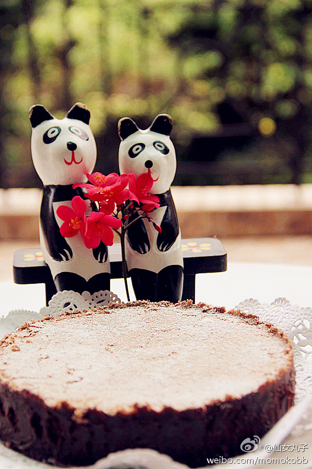

狠甜蜜呀。 //@ZoomQuiet:#今日牛妞爸#嗯嗯嗯#是也乎#是也乎,浓度非常高,高到变粘了,,,但是一点也不腻,,,虽然...但是...因为...所以...牛妞一家是和谐的一家,是快乐的一家,是可持续发展的一家,啊!领导!冒号!
//@ZoomQuiet:#今日牛妞爸#嗯嗯嗯#是也乎#是也乎,浓度非常高,高到变粘了,,,但是一点也不腻,,,虽然...但是...因为...所以...牛妞一家是和谐的一家,是快乐的一家,是可持续发展的一家,啊!领导!冒号!
@仙女丸子:
妞爸生日&四周年快乐！按他的要求制作了浓度75%的顶级巧克力蛋刀，而且还要加蓝莓！ 四年了，如果用四个词来形容我们的关系，我想应该是激情、感恩、支持、理解！每一年我们都用普通的方式来庆祝这一天，也许再过20年我们会看着那个疯丫头带着她的男友也如同我们现在一样步步走来，一步步走去！
四年了，如果用四个词来形容我们的关系，我想应该是激情、感恩、支持、理解！每一年我们都用普通的方式来庆祝这一天，也许再过20年我们会看着那个疯丫头带着她的男友也如同我们现在一样步步走来，一步步走去！
- 